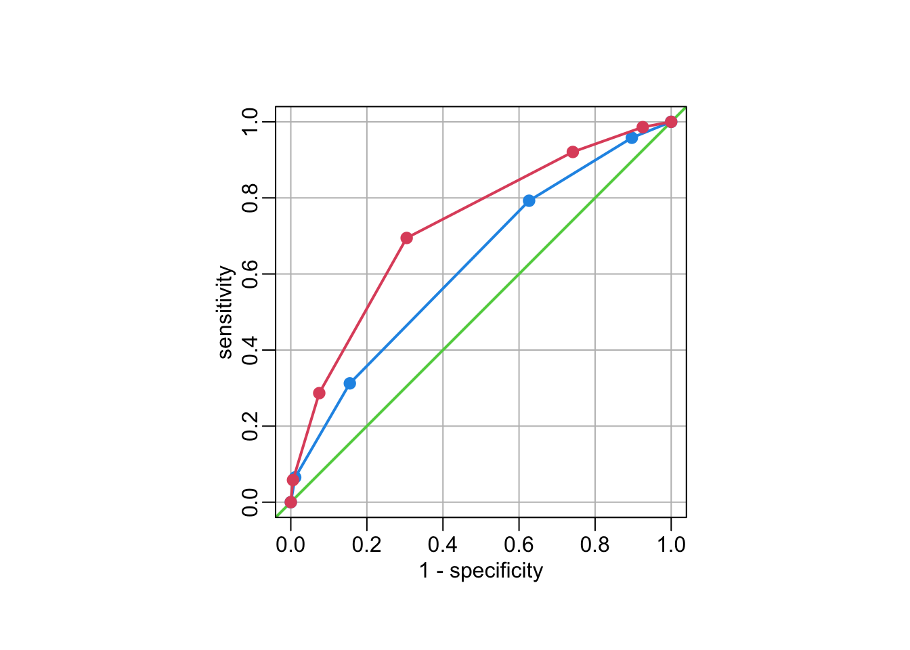
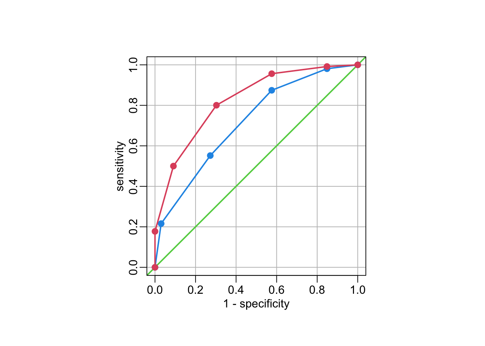

data_path <- paste0(Sys.getenv("HOME"), "/Library/CloudStorage/",
"OneDrive-OxfordUniversityClinicalResearchUnit/",
"GitHub/choisy/typhoid/")Clinical algorithm combining a symptom score with rapid diagnostic tests
Global parameters
The path to the data:
Packages
Required packages:
required_packages <- c("dplyr", "purrr", "magrittr", "car", "yardstick")Installing those that are not installed:
to_inst <- required_packages[! required_packages %in% installed.packages()[,"Package"]]
if (length(to_inst)) install.packages(to_inst)Loading packages for interactive use:
library(dplyr)
library(purrr)
library(magrittr)
library(car)
library(yardstick)Utilitary functions
A function that reads a clean data set:
read_clean_data <- function(file) readRDS(paste0(data_path, "clean_data/", file))A function that transforms a logical vector into a factor vector (with the correct number of levels):
logical2factor <- function(x) factor(x, c("FALSE", "TRUE"))Function that select values of a vector above or below a threshold:
get_greater_than <- function(x, t) x[x > t]
get_lower_than <- function(x, t) x[x < t]A function that identifies the significant univariate logistic regression. This requires the response to be the first column of the inputed data frame x:
sign_uni_log <- function(x) {
map_dbl(x[-1],
~ glm(x[[1]] ~ .x, binomial) |>
summary() |>
coef() |>
extract(2, 4)) |>
get_lower_than(.05)
}A function that computes AUC from vectors of sensitivity and specificity values:
AUC <- function(spec, sens) {
spec <- 1 - spec
.5 + .5 * abs(sum(spec * c(sens[-1], sens[1])) - sum(sens * c(spec[-1], spec[1])))
}Reading the clean data
The Nepal dataset:
nepal <- "nepal.rds" |>
read_clean_data() |>
mutate(across(c(cough, diarrhea, vomiting, abdominal_pain, constipation, headache),
as.logical),
across(c(age, platelets), as.numeric)) |>
select(-starts_with("score"))The Cambodia and Bangladesh dataset:
cambodia_bangladesh <- "cambodia_bangladesh.rds" |>
read_clean_data() |>
select(-country)Analyses of the manuscript
Nepal
Number of missing values:
nepal |>
map_int(~ sum(is.na(.x))) |>
get_greater_than(0) age platelets
2 8 Number of negative and positive cultures:
nepal |>
pull(culture) |>
table()
FALSE TRUE
429 174 Quantiles of age:
nepal |>
pull(age) |>
quantile(na.rm = TRUE) 0% 25% 50% 75% 100%
2 14 20 26 57 Quantiles of fever duration:
nepal |>
pull(fever) |>
quantile(na.rm = TRUE) 0% 25% 50% 75% 100%
3 4 5 6 21 Significant uni-variable logistic regressions:
sign_uni_log(nepal) age cough diarrhea abdominal_pain headache
0.0125720666 0.0171495034 0.0000289745 0.0181269239 0.0251982239
WBC platelets ALT IgM CRP
0.0034096852 0.0177936137 0.0034601632 0.0185161537 0.0002008074 Multivariable logistic regression:
(multi <- glm(culture ~ headache + abdominal_pain + diarrhea + cough, binomial, nepal))
Call: glm(formula = culture ~ headache + abdominal_pain + diarrhea +
cough, family = binomial, data = nepal)
Coefficients:
(Intercept) headacheTRUE abdominal_painTRUE diarrheaTRUE
-1.5151 0.5612 0.3201 0.7893
coughTRUE
-0.5064
Degrees of Freedom: 602 Total (i.e. Null); 598 Residual
Null Deviance: 724.6
Residual Deviance: 693.8 AIC: 703.8Type-II (i.e. correcting for potential confounding effects) significance levels:
Anova(multi)Analysis of Deviance Table (Type II tests)
Response: culture
LR Chisq Df Pr(>Chisq)
headache 3.6193 1 0.0571115 .
abdominal_pain 2.6057 1 0.1064817
diarrhea 14.1708 1 0.0001669 ***
cough 7.1375 1 0.0075487 **
---
Signif. codes: 0 '***' 0.001 '**' 0.01 '*' 0.05 '.' 0.1 ' ' 1Computing the clinical score values:
compute_CS <- function(x) {
mutate(x, score = headache + abdominal_pain + diarrhea + ! cough)
}
nepal %<>% compute_CS()The values of the scores:
table(nepal$score)
0 1 2 3 4
30 131 288 118 36 A few useful functions for metrics computation:
test_score0 <- function(x) {
tmp <- x |>
mutate(score = score < 1,
across(c(culture, score), logical2factor))
list(conf_mat(tmp, culture, score),
npv(tmp, culture, score))
}
test_score1 <- function(x) {
tmp <- x |>
mutate(score = score >= 1,
across(c(culture, score), logical2factor))
list(conf_mat(tmp, culture, score),
npv(tmp, culture, score))
}
test_score_CRP <- function(x) {
tmp <- x |>
mutate(score = score >= 1 & CRP > "<10",
across(c(culture, score), logical2factor))
list(conf_mat(tmp, culture, score),
npv(tmp, culture, score))
}
test_score_IgM <- function(x) {
tmp <- x |>
mutate(score = score >= 1 & IgM > 0,
across(c(culture, score), logical2factor))
list(conf_mat(tmp, culture, score),
npv(tmp, culture, score))
}
test_score_IgM_CRP <- function(x) {
tmp <- x |>
mutate(score = score >= 1 & IgM > 0 & CRP > "<10",
across(c(culture, score), logical2factor))
list(conf_mat(tmp, culture, score),
npv(tmp, culture, score))
}If the score was zero only 2/30 (6.7%) participants had blood culture confirmed enteric fever:
test_score0(nepal)[[1]]
Truth
Prediction FALSE TRUE
FALSE 401 172
TRUE 28 2
[[2]]
# A tibble: 1 × 3
.metric .estimator .estimate
<chr> <chr> <dbl>
1 npv binary 0.0667If the score was one or more the proportion was 172/573 (30.0%):
test_score1(nepal)[[1]]
Truth
Prediction FALSE TRUE
FALSE 28 2
TRUE 401 172
[[2]]
# A tibble: 1 × 3
.metric .estimator .estimate
<chr> <chr> <dbl>
1 npv binary 0.300Combining a symptom score of one or more with a CRP ≥ 10 mg/L increased the proportion with blood culture confirmed enteric fever to 169/525 (32.2%):
test_score_CRP(nepal)[[1]]
Truth
Prediction FALSE TRUE
FALSE 73 5
TRUE 356 169
[[2]]
# A tibble: 1 × 3
.metric .estimator .estimate
<chr> <chr> <dbl>
1 npv binary 0.322… a positive IgMLFA to 112/189 (59.3%):
test_score_IgM(nepal)[[1]]
Truth
Prediction FALSE TRUE
FALSE 352 62
TRUE 77 112
[[2]]
# A tibble: 1 × 3
.metric .estimator .estimate
<chr> <chr> <dbl>
1 npv binary 0.593… and positive CRP ≥ 10 mg/L and a positive IgMLFA to 110/185 (59.5%):
test_score_IgM_CRP(nepal)[[1]]
Truth
Prediction FALSE TRUE
FALSE 354 64
TRUE 75 110
[[2]]
# A tibble: 1 × 3
.metric .estimator .estimate
<chr> <chr> <dbl>
1 npv binary 0.595Figure 1
A function that draws the ROC curve and computes the AUC values:
# function tuning:
lines2 <- function(...) lines(..., type = "o", pch = 19, lwd = 2)
abline2 <- function(...) abline(..., col = "grey")
# ROC curve + AUC:
roc_curve <- function(x) {
# score only:
tmp <- map(0:5, ~ x |>
mutate(score = score >= .x,
across(c(culture, score), logical2factor)))
sensitivity_score1 <- tmp |>
map(sensitivity, culture, score) |>
bind_rows() |>
pull(.estimate)
specificity_score1 <- tmp |>
map(specificity, culture, score) |>
bind_rows() |>
pull(.estimate)
# score with IgM and CRP:
tmp <- map(0:6, ~ x |>
mutate(score = score + (IgM > 0 & CRP != "<10") >= .x,
across(c(culture, score), logical2factor)))
sensitivity_score2 <- tmp |>
map(sensitivity, culture, score) |>
bind_rows() |>
pull(.estimate)
specificity_score2 <- tmp |>
map(specificity, culture, score) |>
bind_rows() |>
pull(.estimate)
# ROC curve figure:
opar <- par(pty = "s")
ticks <- seq(0, 1, .2)
plot(NA, xlim = 0:1, ylim = 0:1, xlab = "1 - specificity", ylab = "sensitivity")
abline2(h = ticks); abline2(v = ticks)
abline(0, 1, lwd = 2, col = 3)
lines2(1 - specificity_score1, sensitivity_score1, col = 4)
lines2(1 - specificity_score2, sensitivity_score2, col = 2)
box(bty = "o")
par(opar)
# AUC values:
round(c(AUC(specificity_score1, sensitivity_score1),
AUC(specificity_score2, sensitivity_score2)), 3)
}Applying the function to the Nepal dataset:
roc_curve(nepal)
[1] 0.626 0.727Cambodia and Bangladesh
Number of observations:
nrow(cambodia_bangladesh)[1] 565Quantiles of ages:
quantile(cambodia_bangladesh$age) 0% 25% 50% 75% 100%
0.0 2.0 7.0 14.9 89.0 Quantiles of durations of fever:
quantile(cambodia_bangladesh$fever) 0% 25% 50% 75% 100%
0 2 4 7 30 Significant uni-variable logistic regressions:
sign_uni_log(cambodia_bangladesh)Warning: glm.fit: fitted probabilities numerically 0 or 1 occurred fever cough vomiting abdominal_pain headache
1.378637e-04 1.706980e-02 1.782932e-02 3.000102e-04 1.028059e-04
pulse temperature hepatomegaly WBC platelets
9.587172e-03 1.199182e-02 1.223256e-02 9.051149e-07 7.918178e-05
IgM
1.998548e-14 Age is not significant:
summary(glm(culture ~ age, binomial, cambodia_bangladesh))
Call:
glm(formula = culture ~ age, family = binomial, data = cambodia_bangladesh)
Coefficients:
Estimate Std. Error z value Pr(>|z|)
(Intercept) -2.871260 0.230250 -12.470 <2e-16 ***
age 0.008913 0.009867 0.903 0.366
---
Signif. codes: 0 '***' 0.001 '**' 0.01 '*' 0.05 '.' 0.1 ' ' 1
(Dispersion parameter for binomial family taken to be 1)
Null deviance: 257.02 on 564 degrees of freedom
Residual deviance: 256.27 on 563 degrees of freedom
AIC: 260.27
Number of Fisher Scoring iterations: 5ALT is not significant:
summary(glm(culture ~ ALT, binomial, cambodia_bangladesh))
Call:
glm(formula = culture ~ ALT, family = binomial, data = cambodia_bangladesh)
Coefficients:
Estimate Std. Error z value Pr(>|z|)
(Intercept) -2.791403 0.187110 -14.919 <2e-16 ***
ALT 0.000461 0.000453 1.018 0.309
---
Signif. codes: 0 '***' 0.001 '**' 0.01 '*' 0.05 '.' 0.1 ' ' 1
(Dispersion parameter for binomial family taken to be 1)
Null deviance: 249.42 on 547 degrees of freedom
Residual deviance: 248.61 on 546 degrees of freedom
(17 observations deleted due to missingness)
AIC: 252.61
Number of Fisher Scoring iterations: 5Contingency table duration of fever and culture result:
cambodia_bangladesh |>
group_by(fever < 3, culture) |>
tally()# A tibble: 4 × 3
# Groups: fever < 3 [2]
`fever < 3` culture n
<lgl> <lgl> <int>
1 FALSE FALSE 366
2 FALSE TRUE 33
3 TRUE FALSE 165
4 TRUE TRUE 1Computing the clinical score values:
cambodia_bangladesh2 <- cambodia_bangladesh |>
filter(! fever < 3) |>
compute_CS()The values of the scores:
table(cambodia_bangladesh2$score)
0 1 2 3 4
80 131 128 48 12 If the symptom score was zero only 1/80 (1.3%) participants had blood culture confirmed enteric fever:
test_score0(cambodia_bangladesh2)[[1]]
Truth
Prediction FALSE TRUE
FALSE 287 32
TRUE 79 1
[[2]]
# A tibble: 1 × 3
.metric .estimator .estimate
<chr> <chr> <dbl>
1 npv binary 0.0125If the score was one or more the proportion was 32/319 (10.0%):
test_score1(cambodia_bangladesh2)[[1]]
Truth
Prediction FALSE TRUE
FALSE 79 1
TRUE 287 32
[[2]]
# A tibble: 1 × 3
.metric .estimator .estimate
<chr> <chr> <dbl>
1 npv binary 0.100Combining a symptom score of one or more with a CRP ≥ 10 mg/L increased the proportion with blood culture confirmed enteric fever to 32/253 (12.6%):
test_score_CRP(cambodia_bangladesh2)[[1]]
Truth
Prediction FALSE TRUE
FALSE 145 1
TRUE 221 32
[[2]]
# A tibble: 1 × 3
.metric .estimator .estimate
<chr> <chr> <dbl>
1 npv binary 0.126… a positive IgMLFA to 29/113 (25.7%):
test_score_IgM(cambodia_bangladesh2)[[1]]
Truth
Prediction FALSE TRUE
FALSE 282 4
TRUE 84 29
[[2]]
# A tibble: 1 × 3
.metric .estimator .estimate
<chr> <chr> <dbl>
1 npv binary 0.257The sensitivity, specificity, positive predictive and negative predictive value for the clinical score combined with a CRP ≥ 10 mg/L and a positive IgMLFA was 85.3%, 89.1%, 33.3%, and 99.0%:
tmp <- cambodia_bangladesh2 |>
mutate(score = score >= 1 & IgM > 0 & CRP > "<10",
across(c(culture, score), logical2factor))
list(conf_mat(tmp, culture, score),
bind_rows(npv(tmp, culture, score),
sensitivity(tmp, culture, score),
specificity(tmp, culture, score),
ppv(tmp, culture, score)))[[1]]
Truth
Prediction FALSE TRUE
FALSE 308 4
TRUE 58 29
[[2]]
# A tibble: 4 × 3
.metric .estimator .estimate
<chr> <chr> <dbl>
1 npv binary 0.333
2 sensitivity binary 0.842
3 specificity binary 0.879
4 ppv binary 0.987Figure 2
roc_curve(cambodia_bangladesh2)
[1] 0.715 0.825